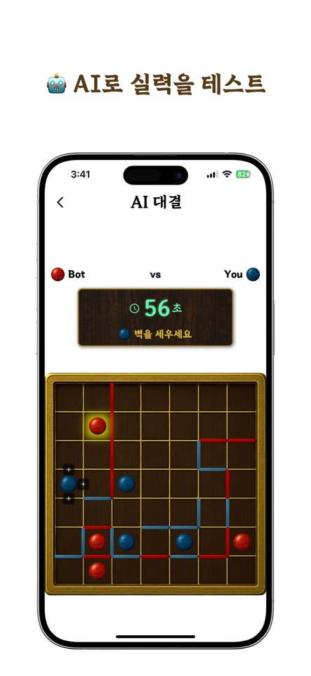
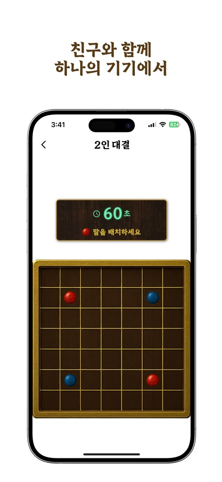
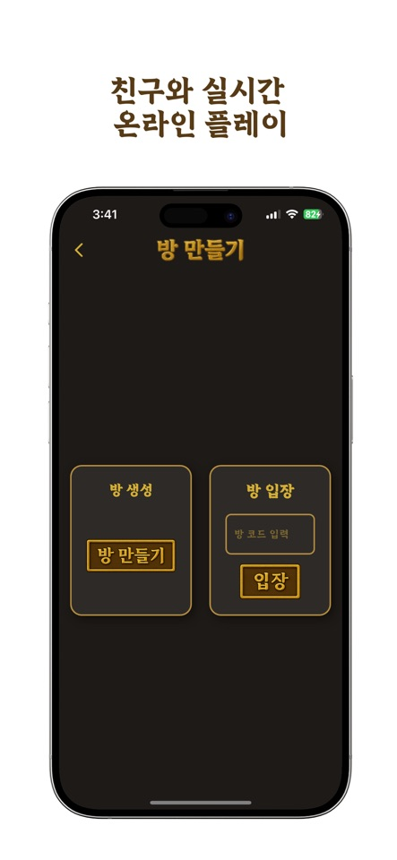

AI와 차근차근
Easy, Normal, Expert, Sedol의 네 난이도에서 도전하세요. 처음이라면 Easy로 이동과 벽 놓기를 익혀보세요.
EasyNormalExpertSedol
보드도 취향대로
세 가지 무료 테마로 대국 분위기를 바꿀 수 있습니다.
2인 전략 보드게임 · 벽바둑
말을 옮기고 벽을 세워, 더 넓은 영역을 차지하세요. 작은 보드 위에서 다음 한 수를 생각하는 즐거움.
사용하는 기기에 맞는 스토어를 선택하세요.

HOW TO PLAY
7×7 보드에서 각자 네 개의 말을 사용합니다.
두 말이 자동 배치된 뒤 나머지 두 말을 놓으면 대국이 시작됩니다.
자신의 말 하나를 골라 상하좌우로 최대 두 칸 이동합니다. 도중에 방향을 바꿀 수 있지만, 벽이나 다른 말을 지나갈 수는 없습니다.
이동한 말 옆에 벽 하나를 놓으면 한 턴이 끝납니다. 상대의 길을 좁히면서 내 말이 움직일 공간도 살펴보세요.
서로의 말이 벽으로 완전히 분리되면 대국이 끝납니다. 내 말이 있는 영역의 칸 수를 합해 더 넓은 쪽이 승리하며, 같으면 무승부입니다.
YOUR NEXT GAME
Easy, Normal, Expert, Sedol의 네 난이도에서 도전하세요. 처음이라면 Easy로 이동과 벽 놓기를 익혀보세요.
세 가지 무료 테마로 대국 분위기를 바꿀 수 있습니다.
같은 화면을 보며 번갈아 수를 두는 오프라인 2인전. 마주 앉은 친구와 한 판을 즐겨보세요.

친구에게 방 코드를 공유해 같은 방에 입장하세요. 온라인 매칭으로 다른 상대와 대결할 수도 있습니다.

FIRST GAME
승패보다 먼저 이동과 벽의 관계를 익혀보세요.
FAQ
일반 바둑의 집 계산이나 돌 따내기 대신, 말의 이동과 벽으로 나뉜 영역을 사용하는 게임입니다. 위의 세 단계 규칙을 읽고 AI의 Easy 난이도로 연습해보세요.
한 기기에서는 오프라인 2인전을 선택합니다. 각자의 기기를 사용할 때는 온라인 친구 대결에서 같은 방 코드로 입장하세요. 연결에 문제가 있으면 지원 페이지를 확인해주세요.
네. WallaGo와 WallBaduk은 이 앱에 사용된 영문 표기입니다. 한국어로는 Wall바둑으로 소개합니다. 이 페이지의 iOS·Android 설치 버튼으로 각 스토어의 앱을 확인할 수 있습니다.